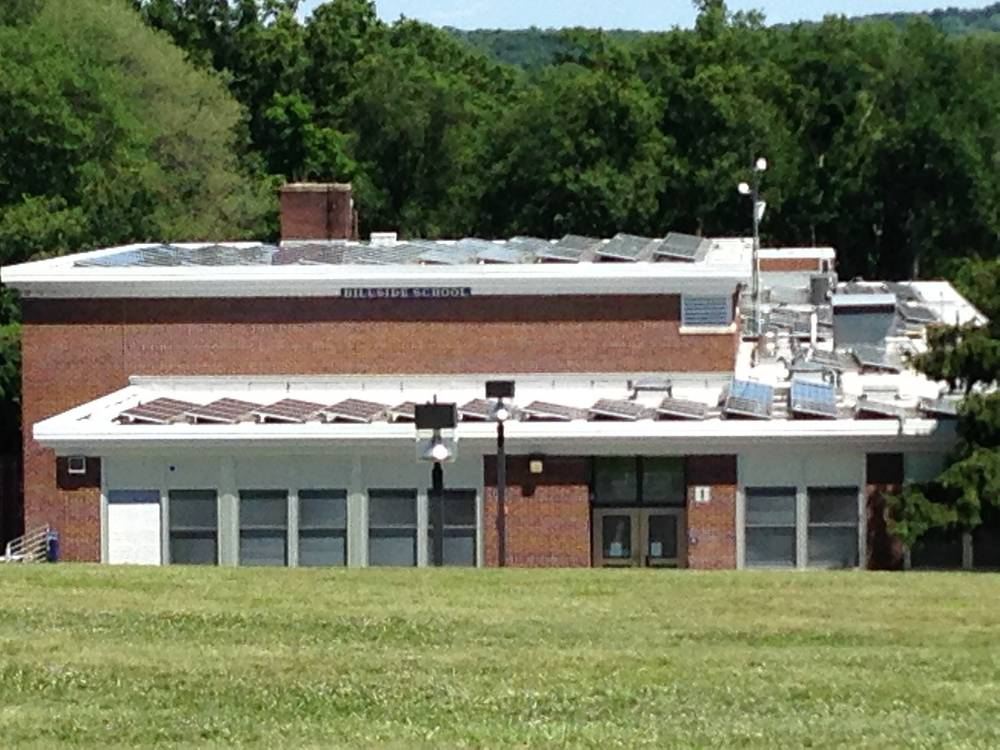

경남 학교 366곳 태양광 497기, 작은 건 3kW·큰 건 563kW…도의회 "188배 격차, 저용량·노후 설비 손봐야"

평균 68kW…경남도의회 교육위, 행정사무감사 마지막 날 교육청에 개선 방안 요구
경남 지역 학교에 설치된 태양광 발전설비의 용량이 학교마다 최대 188배까지 차이 나는 것으로 나타나, 경남도의회가 저용량·노후 설비 개선을 교육청에 요구했다. 김규헌 의원(국민의힘·사천1)은 12일 도의회 교육위원회의 경남교육청 행정사무감사에서 도내 366개 학교에 497개 태양광 설비가 있고 평균 용량은 68kW이지만, 가장 작은 설비는 3kW, 가장 큰 설비는 563kW라고 지적했다.
김 의원은 학교별·지역별 설비 규모와 운영 여건을 꼼꼼히 따져 작은 설비와 낡은 설비를 어떻게 고칠지 방안을 내놓아야 한다고 주문했다. 교육위는 4일부터 7일 동안 교육지원청과 직속기관, 본청을 차례로 감사했으며, 이날 마지막 총괄감사에서는 태양광 설비 운영 효율화와 함께 학교급식 음식물쓰레기 감축, 교육복지 사각지대 해소, 공무원 전보제도 개선 등을 함께 점검했다.
시민에너지 관점
학교 366곳에 설비가 497기나 있는데 평균이 68kW에 그치고 3kW짜리까지 섞여 있다는 것은, 학교 지붕이 아직 '시범 설치' 수준에 머물러 있다는 뜻이다. 영국에서는 지역 에너지협동조합이 학교 지붕을 빌려 태양광을 세우고, 학교는 값싼 전기를 쓰며 수익 일부를 교육에 돌려받는 방식이 널리 쓰인다. 교육청 예산만으로 노후 설비를 바꾸기 어렵다면, 학부모와 지역 주민이 출자하는 시민발전소에 지붕을 열어 주는 것이 가장 빠른 길이다. 경남교육청은 학교별 지붕 면적과 설비 현황을 공개하고, 지역 협동조합이 참여할 수 있는 지붕 임대 공모부터 시작해야 한다.
출처: 경남일보 2026-11-12 조윤제 원문 보기
慶尚南道の学校366校に太陽光497基、小さいもので3kW・大きいもので563kW…道議会「188倍の格差、低容量・老朽設備の改善を」
平均68kW…慶尚南道議会教育委員会、行政事務監査の最終日に教育庁へ改善策を要求
慶尚南道の学校に設置された太陽光発電設備の容量が学校ごとに最大188倍の差があることが分かり、慶尚南道議会は低容量・老朽設備の改善を教育庁に求めた。金圭憲（キム・ギュホン）議員（国民の力・泗川1）は12日、道議会教育委員会による慶尚南道教育庁の行政事務監査で、道内366校に497基の太陽光設備があり平均容量は68kWだが、最も小さい設備は3kW、最も大きい設備は563kWだと指摘した。
金議員は、学校別・地域別の設備規模と運営条件を細かく調べ、小さな設備や古い設備をどう改善するか方策を示すべきだと求めた。教育委員会は4日から7日間、教育支援庁、直属機関、本庁を順に監査し、この日の最終総括監査では太陽光設備の運営効率化とともに、学校給食の食品ロス削減、教育福祉の死角の解消、公務員の異動制度の改善なども点検した。
市民エネルギーの視点
学校366校に設備が497基もあるのに平均が68kWにとどまり、3kWのものまで混じっているということは、学校の屋根がまだ「試験設置」の段階にとどまっていることを意味する。英国では地域のエネルギー協同組合が学校の屋根を借りて太陽光を設置し、学校は安い電気を使い、収益の一部を教育に還元してもらう方式が広く使われている。教育庁の予算だけで老朽設備を替えるのが難しいなら、保護者や地域住民が出資する市民発電所に屋根を開放することが最も早い道だ。慶尚南道教育庁は学校ごとの屋根面積と設備の現状を公開し、地域の協同組合が参加できる屋根貸しの公募から始めるべきだ。
出典: 경남일보 2026-11-12 조윤제 原文を読む
庆尚南道366所学校装有497套太阳能设备，小的3kW、大的563kW…道议会：“相差188倍，应改善低容量和老旧设备”
平均68kW…庆尚南道议会教育委员会在行政事务监察最后一天要求教育厅拿出改善方案
韩国庆尚南道各学校安装的太阳能发电设备容量相差最多达188倍，庆尚南道议会要求教育厅改善低容量和老旧设备。国民力量党议员金圭宪（泗川1选区）12日在道议会教育委员会对庆尚南道教育厅的行政事务监察中指出，道内366所学校共有497套太阳能设备，平均容量为68kW，但最小的设备只有3kW，最大的则有563kW。
金议员要求教育厅仔细检查各学校、各地区的设备规模和运营条件，拿出改进小型设备和老旧设备的方案。教育委员会从4日起用7天时间依次监察了各教育支援厅、直属机构和本厅，当天最后的总监察除太阳能设备运营效率外，还检查了减少学校供餐厨余垃圾、消除教育福利盲区、改进公务员调动制度等问题。
市民能源视角
366所学校装有497套设备，平均却只有68kW，还夹杂着3kW的小设备，说明学校屋顶仍停留在“试点安装”阶段。在英国，地方能源合作社租用学校屋顶建设太阳能，学校用上便宜的电，并把部分收益用于教育，这种模式已十分普遍。如果仅靠教育厅预算难以更换老旧设备，最快的办法就是把屋顶开放给由家长和当地居民出资的市民电站。庆尚南道教育厅应公开各校屋顶面积和设备现状，并从面向地方合作社的屋顶租赁公开招募做起。
来源: 경남일보 2026-11-12 조윤제 查看原文
South Gyeongsang's 366 schools host 497 solar systems ranging from 3kW to 563kW; council says '188-fold gap, fix small and ageing units'
Average size 68kW; provincial council's education committee presses education office for improvement plan on last day of audit
The capacity of solar power systems installed at schools in South Gyeongsang Province varies by as much as 188 times from school to school, prompting the provincial council to ask the education office to upgrade small and ageing units. At the council education committee's administrative audit of the provincial education office on the 12th, councillor Kim Gyu-heon (People Power Party, Sacheon 1) noted that 366 schools in the province have 497 solar systems with an average capacity of 68kW, but the smallest is just 3kW and the largest 563kW.
Kim called on the office to examine system sizes and operating conditions by school and by area and to come up with a plan for improving small and old installations. The committee spent seven days from the 4th auditing district education offices, affiliated institutions and the head office, and at the final general audit that day it also reviewed cutting school-meal food waste, closing gaps in education welfare and reforming civil-servant transfer rules, alongside more efficient operation of the solar systems.
Citizen Energy View
With 497 systems at 366 schools averaging only 68kW, and some as small as 3kW, school rooftops are still stuck at the 'pilot installation' stage. In the UK, local energy cooperatives commonly lease school roofs to install solar, with schools buying cheaper power and receiving part of the returns for education. If the education budget alone cannot replace old equipment, the fastest route is to open roofs to citizen power plants funded by parents and local residents. The South Gyeongsang education office should publish each school's roof area and equipment status and start with a roof-lease call that local cooperatives can join.
Source: 경남일보 2026-11-12 조윤제 Read the original